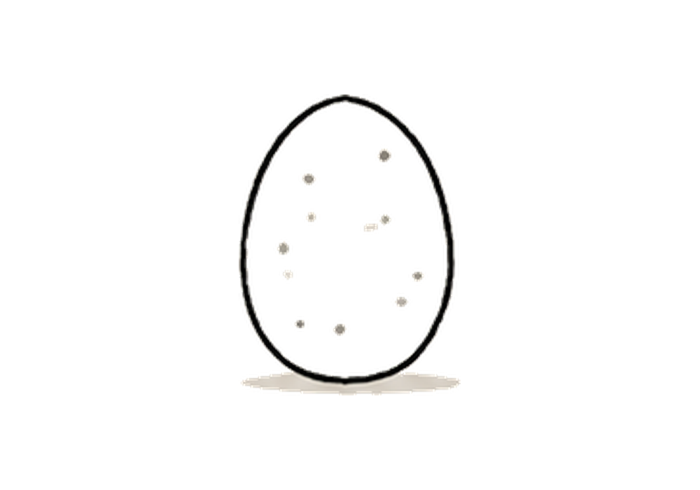

1
Приземлиться
Прежде чем открывать программу — просто окажись за столом. Это уже шаг.
- Села за компьютер
- Тетрадь с задачей рядом, открыта на нужной странице
- Сказала себе: «я готова подойти к этой задаче»

Шаг за шагом. Если застреваешь — выдыхай, никуда не торопись.
Прежде чем открывать программу — просто окажись за столом. Это уже шаг.
Просто запустить. Пока ничего не рисуем.
Одно действие. Пробуй — без ожиданий, как получится.
Выбирай честно — это не оценка, это маршрут дальше.
Красиво с первого раза — тоже результат. Поставь галочку и выдохни.
«Некрасиво» — нормальная часть любой работы. Посмотри, что именно хочется поменять, и попробуй ещё раз.
Открой лист и посмотри, что это за ошибка. Разберись спокойно — и попробуй ещё раз.
Ты прошла путь целиком — от стула у компьютера до нарисованной полоски. Это и была задача. Остальное — техника, которая накачивается сама от повторений.